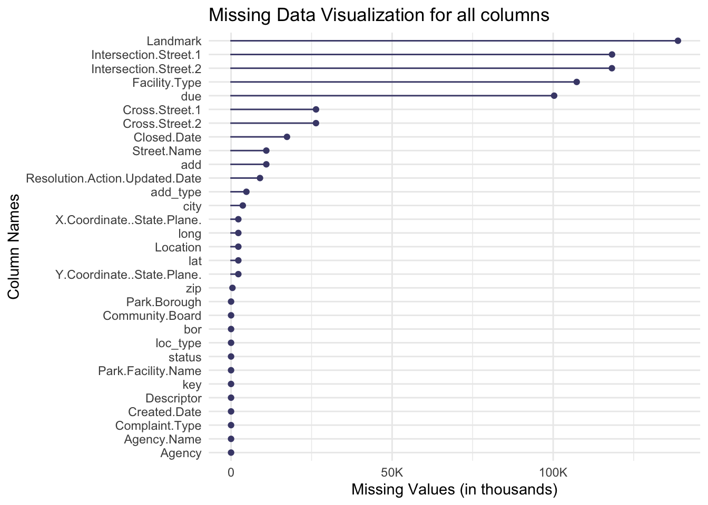
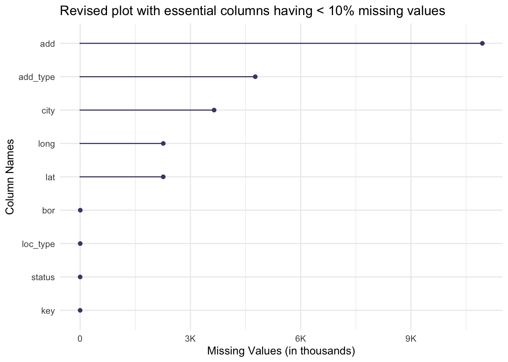

The data comes from 311 service requests and we imported the data directly from the link above using NYC Open Data’s csv, downloaded onto our local system and then used it for the analysis.
2.1.2 Data update frequency on the website:
Everyday 9AM EST. This dataset contains various columns representing different aspects of rat sightings in New York City from 2010 to present day and is updated daily on the NYC Open Data Platform.
2.1.3 Descriptive stats about the data:
The data has 31 features with 232,536 rows. We have not detailed all the 31 features but instead only the ones which will be mainly used for our analysis. An overall description of the features is given in the data addendum section.
Created Date: The date and time when the sighting report was created. This will be important for a time series analysis of the dataset.
Location Type [loc_type]: The type of location where the sighting occurred. This categoric feature has 23 levels. Each level can be used to split the data for analyzing in-depth trends.
Incident Zip [zip]: The ZIP code where the sighting occurred. Used for geospatial analysis of the data.
Status [status]: The current status of the sighting report. This has 7 levels - Pending, Closed, Assigned, In-Progress, Open, Draft, Unspecified.
Borough [bor]: The borough in which the sighting occurred. This has 6 levels Queens, Brooklyn, Manhattan, Bronx, Staten Island and Unspecified.
Latitude [lat]: The latitude of the sighting location. Used for geo-spatial mapping of sightings.
Longitude [long]: The longitude of the sighting location. Used for geo-spatial mapping of sightings
2.2 Research Plan:
1. Breakdown of research objectives
Primary Objective:
Understand patterns and trends of rat sightings in New York City.
Secondary Objectives:
Investigating the seasonal and yearly trends in rat sightings.
Identifying hotspots for rat sightings.
Investigating trends around whether a rat sighting 311 request is closed.
2. Data Exploration
Primary features we will use for analysing this dataset:
Created Date for time series analysis
Incident Zip, Latitude, Longitude for geospatial analysis and plotting maps of rat sightings
Location Type, Borough, Status for finding correlations
3. Descriptive Analysis
Initial Overview: Summary statistics and basic visualizations.
Temporal Analysis: Time-based trend analysis, segmented by categorical features like borough, location type.
Geographical Analysis: Map-based visualizations.
Correlation Analysis: Analysis of correlated categorical variables like created date, status, borough, location type.
2.3 Missing value analysis
2.3.1 Table of columns with missing values and their % missing out of the total data.
Code
library(dplyr)library(tidyr)library(ggplot2)# Reading dataset#"/Users/kaitlynbrown/Desktop/STAT5702/Rat_Sightings.csv"data <-read.csv("/Users/kaitlynbrown/Desktop/STAT5702/Rat_Sightings.csv")replace_blanks_with_na <-function(x) {if (is.character(x)) {return(ifelse(x =="", NA, x)) } elseif (is.integer(x)) {return(ifelse(x ==0, NA_integer_, x)) # Replace '0' with NA for integers } else {return(x) }}# replace every blank entry with NAdata <- data |>mutate(across(everything(), replace_blanks_with_na))#renaming columns which are essential for our analysiscnames<-colnames(data)#renaming these columnsdata <- data |>rename(key =names(data)[1], loc_type =names(data)[8], zip =names(data)[9],add =names(data)[10],add_type =names(data)[16],city =names(data)[17],status =names(data)[20],due =names(data)[21],bor =names(data)[24],lat =names(data)[29],long =names(data)[30] )# Total number of rows in the datasettotal_rows <-nrow(data)# Calculate missing values count and percentage for each columnmissing_values <- data |>summarise(across(everything(), ~sum(is.na(.)))) |>pivot_longer(cols =everything(), names_to ="Feature", values_to ="count_missing") |>mutate(percentage_missing =round((count_missing / total_rows) *100, 2)) |>filter(count_missing >0) |># Filter out columns with no missing valuesarrange(desc(percentage_missing)) # Arrange in descending order of missing percentage# Print the resultprint(missing_values)
We plot a chart which shows all columns and their missing values:
Code
library(naniar)library(tidyr)library(ggplot2)library(scales)# Visualize missing values in each columnplot <-gg_miss_var(data)# Modify the x-axis labels to display in the form of 1000'splot +scale_y_continuous(labels =label_number_si()) +labs(title ="Missing Data Visualization for all columns",x ="Column Names",y ="Missing Values (in thousands)" )

In the next step, we drop the following columns:
Columns with more than 10% missing values
Columns which are non-essential to our analysis. The list of essential columns is given in the descriptive stats section of this page.
Revised plot of analysis essential columns which have less than 10% missing values:
Code
library(naniar)library(tidyr)library(ggplot2)library(scales)# Picking only columns with less than 10% missing values and those which are essential to our analysis.columns_over_10_percent_missing <- missing_values %>%filter(percentage_missing >10) %>%pull(Feature)#remove columns with over 10% missing valuescleaned_data <- data |>select(-all_of(columns_over_10_percent_missing))# select only those columns relevant to the analysiscleaned_data <- data |>select(1,8,10,16,17,20,24,29,30)# Visualize missing values in each columnplot <-gg_miss_var(cleaned_data)# Modify the x-axis labels to display in the form of 1000'splot +scale_y_continuous(labels =label_number_si()) +labs(title ="Revised plot with essential columns having < 10% missing values",x ="Column Names",y ="Missing Values (in thousands)" )

Additional visuals on columns with missing data:
Using the Redav library for plotting missing values with % instead of absolute counts.
As per our analysis - Address , Address type, City, Longitude and Latitude of rat sightings are the ones with the highest missing values (still under 10%). We cannot impute these missing values by any means and our final analysis removed rows which had these missing values.